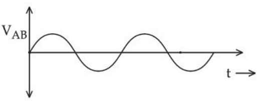

Filter questions
Q1
CHEM-2021-0101-S1-Q044
2021 | 16 Mar | Shift 1
—
MCQ
Given below are two statement: one is labelled as Assertion A and the other is labelled as Reason R: Assertion A: Size of Bk3+ ion is less than Np3+ ion. Reason R: The above is a consequence of the lanthanide contraction. In the light of the above statements, choose the correct answer from the options given below:
Answer: C
Q2
CHEM-2021-0101-S1-Q039
2021 | 20 Jul | Shift 1
—
MCQ
Given below are two statements. One is labelled as Assertion A and the other is labelled as Reason R. Assertion A: Sharp glass edge becomes smooth on heating it up to its melting point. Reason R: The viscosity of glass decreases on melting. Choose the most appropriate answer from the options given below.
Answer: B
Q3
CHEM-2021-0101-S2-Q034
2021 | 24 Feb | Shift 2
—
MCQ
Given below are two statements: one is labelled as Assertion A and the other is labelled as Reason R. Assertion A: Hydrogen is the most abundant element in the Universe, but it is not the most abundant gas in the troposphere. Reason R: Hydrogen is the lightest element. In the light of the above statements, choose the correct answer from the options given below:
Answer: B
Q4
CHEM-2021-0101-S1-Q051
2021 | 25 Feb | Shift 1
—
Integer
A car tyre is filled with nitrogen gas at 35 psi at 27 °C. It will burst if pressure exceeds 40 psi. The temperature in ∘C at which the car tyre will burst is (Rounded-off to the nearest integer)
Answer: 70
Q5
CHEM-2021-0101-S2-Q040
2021 | 27 Jul | Shift 2
—
MCQ
Select the correct statements.
Answer: D
Q6
CHEM-2021-0101-S1-Q035
2021 | 31 Aug | Shift 1
—
MCQ
Given below are two statements: one is labelled as Assertion
Answer: B
Q7
CHEM-2021-0101-S1-Q046
2021 | 31 Aug | Shift 1
—
MCQ
Given below are two statements: Statement I: The process of producing syn-gas is called gasification of coal. Statement II: The composition of syn-gas is CO + CO2 + H2(1: 1: 1). In the light of the above statements, choose the most appropriate answer from the options given below:
Answer: B
Q8
CHEM-2022-0101-S1-Q052
2022 | 24 Jun | Shift 1
—
Integer
A 0.166 g sample of an organic compound was digested with conc. H2 SO4 and then distilled with NaOH. The ammonia gas evolved was passed through 50.0 mL of 0.5 N H2 SO4. The used acid required 30.0 mL of 0.25 N NaOH for complete neutralization. The mass percentage of nitrogen in the organic compound is
Answer: 63
Q9
CHEM-2022-0101-S1-Q031
2022 | 27 Jun | Shift 1
—
MCQ
Given below are two statements: one is labelled as Assertion and the other is labelled as Reason. Assertion: The ionic radii of O2− and Mg2+ are same. Mg2+ Reason: Both O2− and are isoelectronic species. In the light of the above statements, choose the correct answer from the options given below.
Answer: D
Q10
CHEM-2022-0101-S2-Q041
2022 | 27 Jun | Shift 2
—
MCQ
Given below are two statements: one is labelled as Assertion and the other is labelled as Reason. Assertion: Flourine forms one oxoacid. Reason: Flourine has smallest size amongst all halogens and is highly electronegative. In the light of the above statements, choose the most appropriate answer from the Question: options given below.
Answer: A
Q11
CHEM-2022-0101-S2-Q043
2022 | 27 Jun | Shift 2
—
MCQ
The ' f ' orbitals are half and completely filled, respectively in lanthanide ions [Given: Atomic no. Eu, 63: Sm, 62: Tm, 69; Tb, 65; Yb, 70; Dy, 66 ] Eu2+ Tm2+ Sm2+ Tm3+
Answer: C
Q12
CHEM-2023-0101-S1-Q031
2023 | 01 Feb | Shift 1
—
MCQ
Given below are two statements: one is labelled as Assertion A and the other is labelled as Reason R Assertion A: Hydrogen is an environment friendly fuel. Reason R: Atomic number of hydrogen is 1 and it is a very light element. In the light of the above statements, choose the correct answer from the options given below
Answer: B
Q13
CHEM-2023-0101-S1-Q039
2023 | 01 Feb | Shift 1
—
MCQ
Given below are two statements: one is labelled as Assertion A and the other is labelled as Reason R Assertion A: In an Ellingham diagram, the oxidation of carbon to carbon monoxide shows a negative slope with respect to temperature. Reason R: CO tends to get decomposed at higher temperature. In the light of the above statements, choose the correct answer from the options given below

Answer: D
Q14
CHEM-2023-0101-S1-Q034
2023 | 06 Apr | Shift 1
—
MCQ
Given below are two statements, one is labelled as Assertion A and the other is labelled as Reason R. – 3 Assertion A: Loss of electron from hydrogen atom results in nucleus of ~1.5 × 10 pm size. Reason R: Proton H+ always exists in combined form. In the light of the above statements, choose the most appropriate answer from the options given below:
Answer: D
Q15
CHEM-2023-0101-S1-Q044
2023 | 06 Apr | Shift 1
—
MCQ
Given below are two statements, one is labelled as Assertion A and the other is labelled as Reason R. 3 - Assertion A: The spin only magnetic moment value for Fe ( CN ) is 1.74 BM, whereas for [Fe(H2O)6] 3 + is 6 FeH2O6 5.92 BM. Reason B: In both complexes, Fe is present in +3 oxidation state. In the light of the above statements, choose the correct answer from the options given below:
Answer: C
Q16
CHEM-2023-0101-S1-Q036
2023 | 08 Apr | Shift 1
—
Integer
Three bulbs are filled with CH4, CO2 and Ne as shown in the picture. The bulbs are connected through pipes of zero volume. When the stopcocks are opened and the temperature is kept constant throughout, the pressure of the system is found to be______ atm. (Nearest integer).

Answer: 4
Q17
CHEM-2023-0101-S2-Q033
2023 | 10 Apr | Shift 2
—
MCQ
Given below are two statements: one is labelled as Assertion A and the other is labelled as Reason R. Mg2 + Mg+ Assertion A: The energy required to form from Mg is much higher than that required to produce Reason R:Mg2 + is small ion and carry more charge than Mg+ In the light of the above statements, choose the correct answer from the options given below.
Answer: D
Q18
CHEM-2023-0101-S2-Q036
2023 | 10 Apr | Shift 2
—
MCQ
Given below are two statements: one is labelled as Assertion A and the other is labelled as Reason R. Assertion A: Physical properties of isotopes of hydrogen are different. Reason R: Mass difference between isotopes of hydrogen is very large. In the light of the above statements, choose the correct answer from the options given below:
Answer: A
Q19
CHEM-2023-0101-S1-Q041
2023 | 11 Apr | Shift 1
—
MCQ
In the extraction process of copper, the product obtained after carrying out the reactions (i) 2Cu2 S + 3O2 ⟶2Cu2O + 2SO2 (ii) 2Cu2O + Cu2 S ⟶6Cu + SO2 is called
Answer: A
Q20
CHEM-2023-0101-S2-Q055
2023 | 11 Apr | Shift 2
—
Integer
Given below are two statements, one is labelled as assertion A and the other is labelled as Reason R. assertion A: [CoCl (NH3)5]2+ absorbs at lower wavelength of light with respect to [Co (NH3)5(H2O)]3+ Reason R: It is because the wavelenght of light absorbed depends on the oxidation state of the metal ion. In the light of the above statements,choose the correct answer from the options given below: (1) A is false but R is true (2) A is true but R is false (3) Both A and R are true and R is the correct (4) Both A and R are true and R is NOT the correct explaination of A explaination of A
Answer: 1
Q21
CHEM-2023-0101-S1-Q032
2023 | 12 Apr | Shift 1
—
MCQ
Given below are two statement: one is labelled as Assertion A and the other is labelled as Reason R Assertion A: 5f electron can participate in bonding to a far greater extent than 4f electrons Reason R: 5f orbitals are not as buried as 4f orbitals In the light of the above statements, choose the correct answer from the options given below
Answer: B
Q22
CHEM-2023-0101-S1-Q051
2023 | 12 Apr | Shift 1
—
Integer
Given below are two statements: one is labelled as Assertion A and the other is labelled as Reason R Assertion A: In the Ellingham diagram, a sharp change in slope of the line is observed from Mg →MgO at ~1120oC Reason R: There is a large change of entropy associated with the change of state In the light of the above statements, choose the correct answer from the options given below (1) Both A and R are true but R is NOT the correct (2) A is false but R is true explanation of A (3) Both A and R are true and R is the correct (4) A is true but R is false explanation of A

Answer: 3
Q23
CHEM-2023-0101-S2-Q038
2023 | 13 Apr | Shift 2
—
MCQ
Given below are two statements, one is labelled as Assertion A and the other is labelled as Reason R. Assertion A: Order of acidic nature of the following compounds is A > B > C. Reason R: Fluoro is a stronger electron withdrawing group than Chloro group. In the light of the above statements, choose the correct answer from the options given below:
Answer: D
Q24
CHEM-2023-0101-S1-Q035
2023 | 15 Apr | Shift 1
—
MCQ
Given below are two statements: One is labelled as Assertion A and the other is labelled as Reason R: Assertion
Answer: D
Q25
CHEM-2023-0101-S1-Q054
2023 | 25 Jan | Shift 1
—
Integer
Given below are two statements: one is labelled as Assertion A and the other is labelled as Reason R: Assertion A: Acetal/Ketal is stable in basic medium. Reason R: The high leaving tendency of alkoxide ion gives the stability to acetal/ketal in basic medium. In the light of the above statements, choose the correct answer from the options given below: (1) A is true but R is false (2) A is false but R is true (3) Both A and R are true and R is the correct (4) Both A and R are true but R is NOT the correct explanation of A explanation of A

Answer: 42
Q26
CHEM-2023-0101-S2-Q040
2023 | 25 Jan | Shift 2
—
MCQ
Given below are two statements, one is labelled as Assertion A and the other is labelled as Reason R Assertion A:- Carbon forms two important oxides CO and CO2. CO is neutral whereas CO2 is acidic in nature. Reason R: CO2 can combine with water in a limited way to form carbonic acid, while CO is sparingly soluble in water. In the light of the above statements, choose the most appropriate answer from the options given below:-
Answer: C
Q27
CHEM-2023-0101-S2-Q056
2023 | 25 Jan | Shift 2
—
Integer
Given below are two statements, one is labelled as Assertion A and the other is labelled as Reason R Assertion A:- Butylated hydroxyl anisole when added to butter increases its shelf life. Reason R:- Butylated hydroxyl anisole is more reactive towards oxygen than food. In the light of the above statements, choose the most appropriate answer from the options given below:- (1) Both A and R are correct and R is the correct (2) A is correct but R is not correct. explanation of A. (3) A is not correct but R is correct. (4) Both A and R are correct but R is NOT the correct explanation of A.

Answer: 1
Q28
CHEM-2023-0101-S1-Q050
2023 | 30 Jan | Shift 1
—
MCQ
Given below are two statements: one is labelled as Assertion
Answer: C
Q29
CHEM-2023-0101-S2-Q043
2023 | 30 Jan | Shift 2
—
MCQ
Given below are two statements: One is labelled as Assertion A and the other is labelled as Reason R. Assertion A: can be easily reduced using Zn −Hg / HCl to Reason R: Zn −Hg / HCl is used to reduce carbonyl group to – CH2 – group. In the light of the above statements, choose the correct answer from the options given below:
Answer: C
Q30
CHEM-2023-0101-S2-Q052
2023 | 31 Jan | Shift 2
—
Integer
Which of the following elements have half-filled f-orbitals in their ground state? (Given: atomic number Sm −62; Eu = 63; Tb = 65; Gd = 64, Pm = 61 ) Choose the correct answer from the options given below: (1) A and B only (2) C and D only (3) B and D only (4) A and E only
Answer: 5
Q31
CHEM-2024-0101-S1-Q043
2024 | 01 Feb | Shift 1
—
MCQ
We have three aqueous solutions of NaCl labelled as ‘A’, ‘B’ and ‘C’ with concentration 0.1 M, 0.01M and respectively. The value of van Haft factor for these solutions will be in the order. 0.001 M, t’ i
Answer: A
Q32
CHEM-2024-0101-S1-Q037
2024 | 06 Apr | Shift 1
—
MCQ
At −20∘C and 1 atm pressure, a cylinder is filled with equal number of H2, I2 and HI molecules for the reaction H2( g) + I2( g) ⇌2HI(g), the Kp for the process is x × 10−1. x = _____ [Given: R = 0.082 L atm K−1 mol−1 ]
Answer: B
Q33
CHEM-2024-0101-S1-Q039
2024 | 08 Apr | Shift 1
—
MCQ
Give below are two statements: One is labelled as Assertion and the other is labelled as Reason R: Assertion A A: The stability order of +1 oxidation state of Ga, In and T1 is Ga < In < T1. Reason R: The inert pair effect stabilizes the lower oxidation state down the group. In the light of the above statements, choose the correct answer from the options given below:
Answer: C
Q34
CHEM-2024-0101-S1-Q031
2024 | 30 Jan | Shift 1
—
MCQ
Given below are two statements: Statement-I: The orbitals having same energy are called as degenerate orbitals. Statement-II: In hydrogen atom, 3p and 3 d orbitals are not degenerate orbitals. In the light of the above statements, choose the most appropriate answer from the options given
Answer: A
Q35
CHEM-2024-0101-S1-Q032
2024 | 30 Jan | Shift 1
—
MCQ
Given below are the two statements: one is labeled as Assertion
Answer: B
Q36
CHEM-2024-0101-S1-Q049
2024 | 30 Jan | Shift 1
—
MCQ
The Lassiagne's extract is boiled with dil HNO3 before testing for halogens because,
Answer: D
Q37
CHEM-2024-0101-S2-Q039
2024 | 31 Jan | Shift 2
—
MCQ
The fragrance of flowers is due to the presence of some steam volatile organic compounds called essential oils. These are generally insoluble in water at room temperature but are miscible with water vapour in the vapour phase. A suitable method for the extraction of these oils from the flowers is:
Answer: D
Q38
CHEM-2025-0101-S1-Q033
2025 | 22 Jan | Shift 1
—
MCQ
Which of the following circuits represents a forward biased diode? Choose the correct answer from the options given below:
Answer: D
Q39
CHEM-2025-0101-S1-Q036
2025 | 22 Jan | Shift 1
—
MCQ
A closed organ and an open organ tube are filled by two different gases having same bulk modulus but different densities and, respectively. The frequency of 9th harmonic of closed tube is identical with 4th ρ1 ρ2′ harmonic of open tube. If the length of the closed tube is 10 cm and the density ratio of the gases is ρ1: ρ2 = 1: 16, then the length of the open tube is:
Answer: D
Q40
CHEM-2025-0101-S2-Q038
2025 | 22 Jan | Shift 2
—
MCQ
Given below are two statements. One is labelled as Assertion
Answer: D
Q41
CHEM-2025-0101-S2-Q049
2025 | 22 Jan | Shift 2
—
Integer
A tube of length 1 m is filled completely with an ideal liquid of mass 2 M, and closed at both ends. The tube is rotated uniformly in horizontal plane about one of its ends. If the force exerted by the liquid at the other end is F then angular velocity of the tube is √F in SI unit. The value of α is __________. αM

Answer: 1
Q42
CHEM-2025-0101-S2-Q033
2025 | 24 Jan | Shift 2
—
MCQ
A solid sphere and a hollow sphere of the same mass and of same radius are rolled on an inclined plane. Let the time taken to reach the bottom by the solid sphere and the hollow sphere be t1 and t2, respectively, then
Answer: C
Q43
CHEM-2025-0101-S2-Q045
2025 | 24 Jan | Shift 2
—
MCQ
Given below are two statements. One is labelled as Assertion
Answer: C
Q44
CHEM-2025-0101-S1-Q033
2025 | 28 Jan | Shift 1
—
MCQ
A hemispherical vessel is completely filled with a liquid of refractive index μ. A small coin is kept at the lowest point (O) of the vessel as shown in figure. The minimum value of the refractive index of the liquid so that a person can see the coin from point E (at the level of the vessel) is
Answer: D
Q45
CHEM-2025-0101-S2-Q045
2025 | 28 Jan | Shift 2
—
MCQ
In the circuit shown here, assuming threshold voltage of diode is negligibly small, then voltage VAB is correctly represented by:

Answer: D
Q46
CHEM-2025-0101-S2-Q051
2025 | 28 Jan | Shift 2
—
Integer
Concentrated nitric acid is labelled as 75% by mass. The volume in mL of the solution which contains 30 g of nitric acid is ____. Given: Density of nitric acid solution is 1.25 g/mL. (1) 40 (2) 32 (3) 45 (4) 55
Answer: 2
Q47
CHEM-2025-0101-S1-Q033
2025 | 29 Jan | Shift 1
—
MCQ
Given below are two statements: one is labelled as Assertion
Answer: D
Q48
CHEM-2025-0101-S1-Q044
2025 | 29 Jan | Shift 1
—
MCQ
Given below are two statements: one is labelled as Assertion
Answer: A